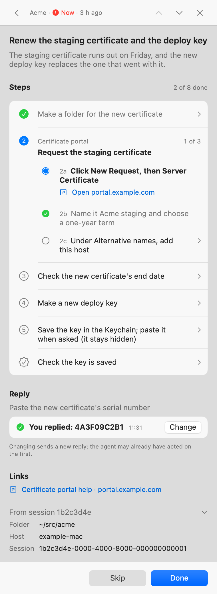
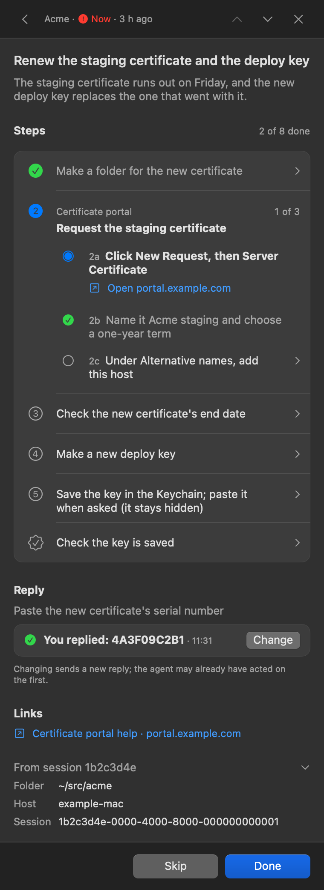
Steps you follow without thinking
The exact command, a Copy button and what you should see. A paste never runs by itself.
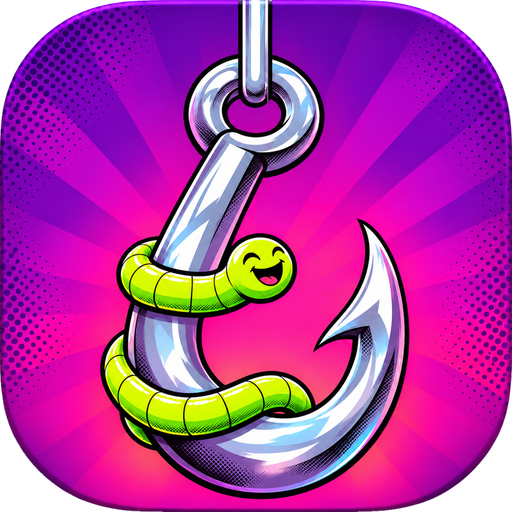
An inbox in your menu bar for what your coding agents need from you.
A session needs a key, a decision or a click? It lands here as a checklist. Tick it off, and the session carries on.
curl -fsSL https://raw.githubusercontent.com/xooxoxxo/hook/main/scripts/get.sh | bash
⌃⌥⌘R opens it from any app.
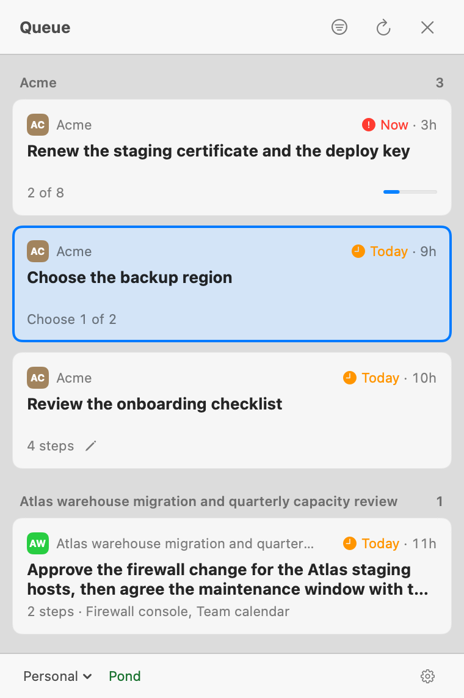
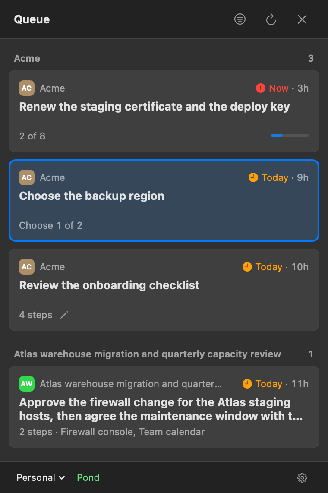
Every ask makes one round trip. Nothing scrolls away.
Numbered steps, exact commands and what you should see.
The hook in your menu bar catches a fish. Copy, tick, answer.
Done, Skip or your reply reaches the session that asked.
The default. Asks never leave the Mac.
A server you run holds your asks and reaches you on Telegram when you're away. Reports, messages, corrections and required steps need one. Hook doesn't ship a Pond.


The exact command, a Copy button and what you should see. A paste never runs by itself.
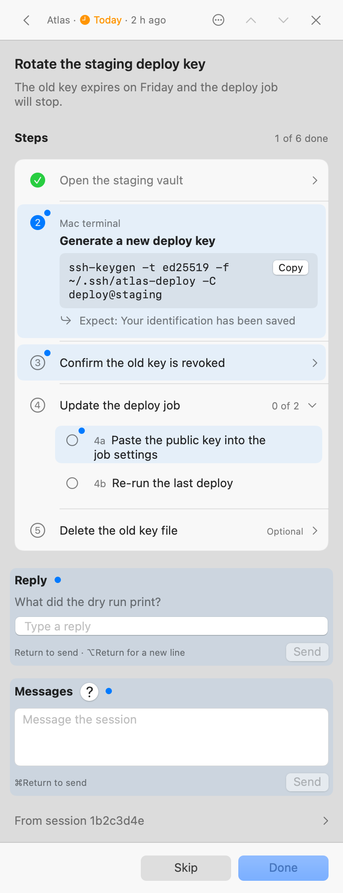
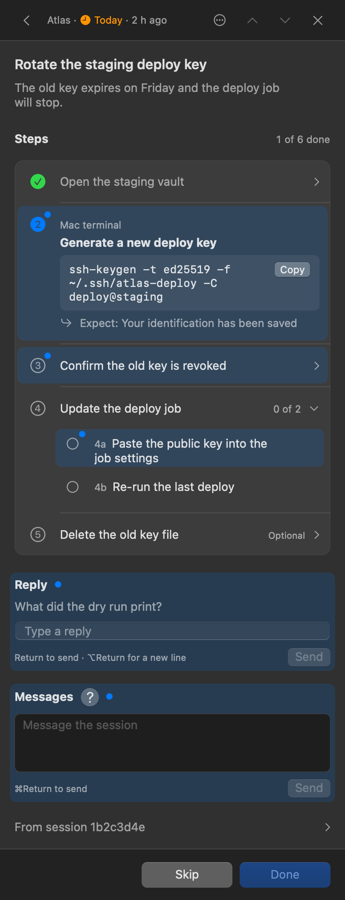
Done waits until they're finished. Skip always works.
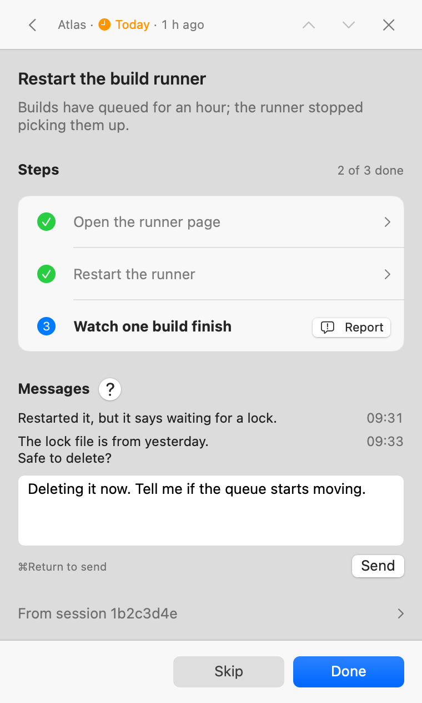
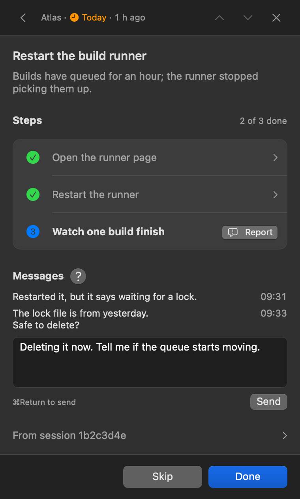
Talk to the session without opening its terminal. A report goes back quoted, never as an instruction.
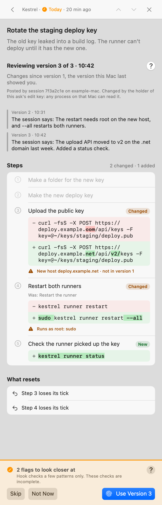
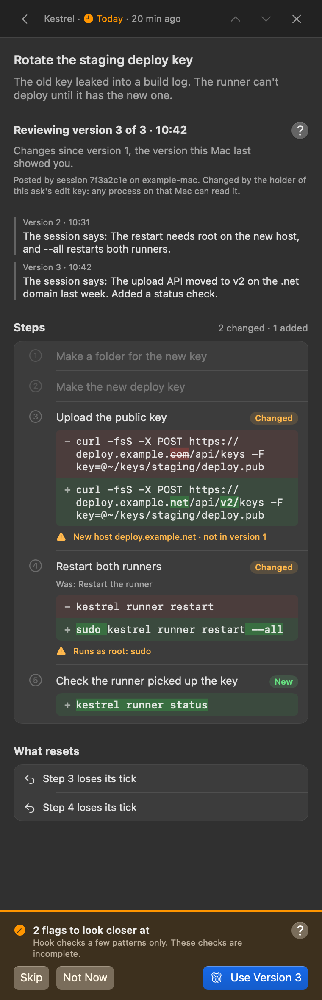
One diff, with the session's reasons. A changed command needs Touch ID.
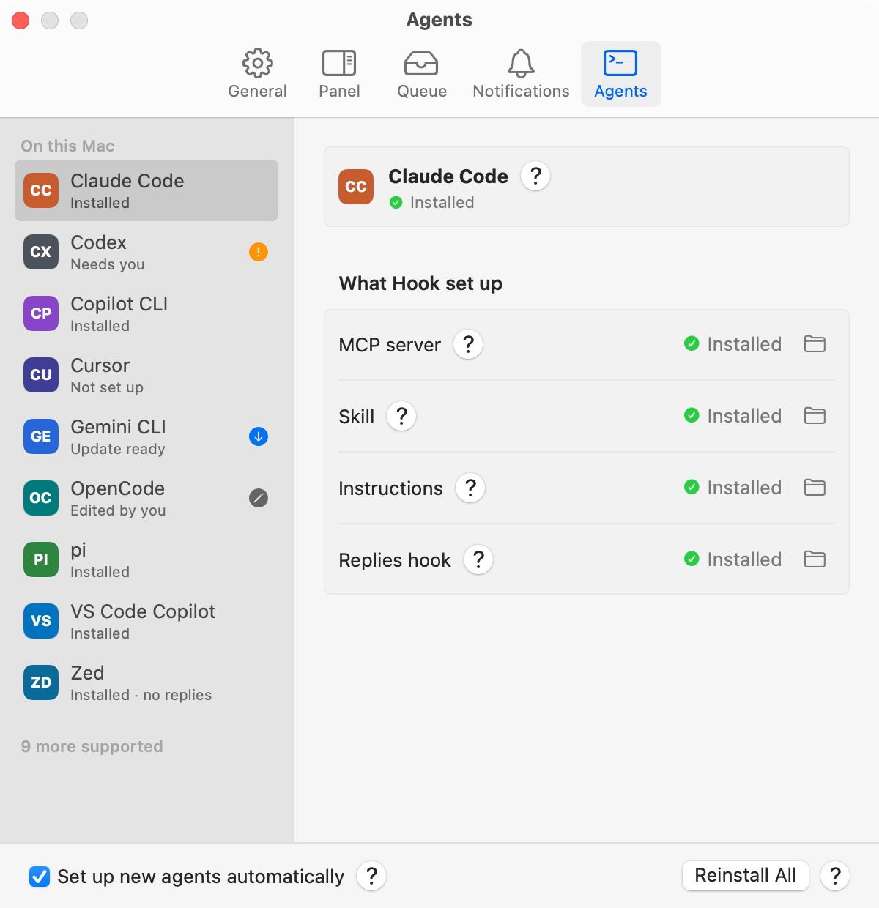
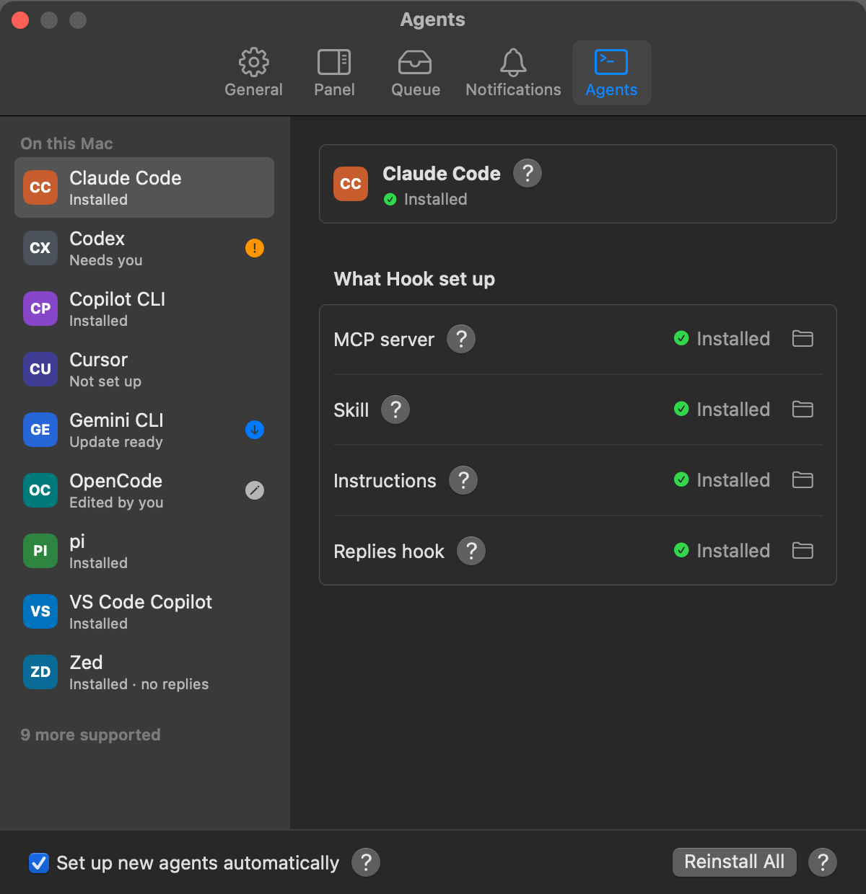
MCP server, skill, instructions and replies hook, kept up to date. Hook asks before it touches a file you edited.
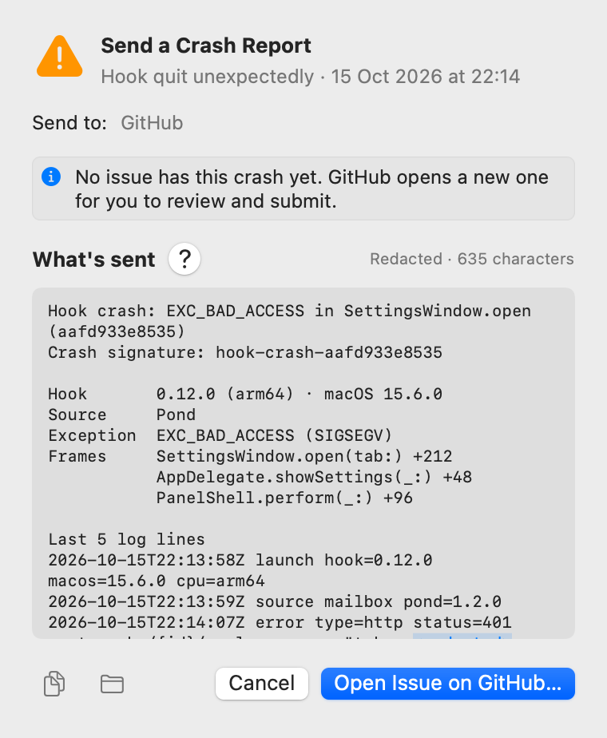
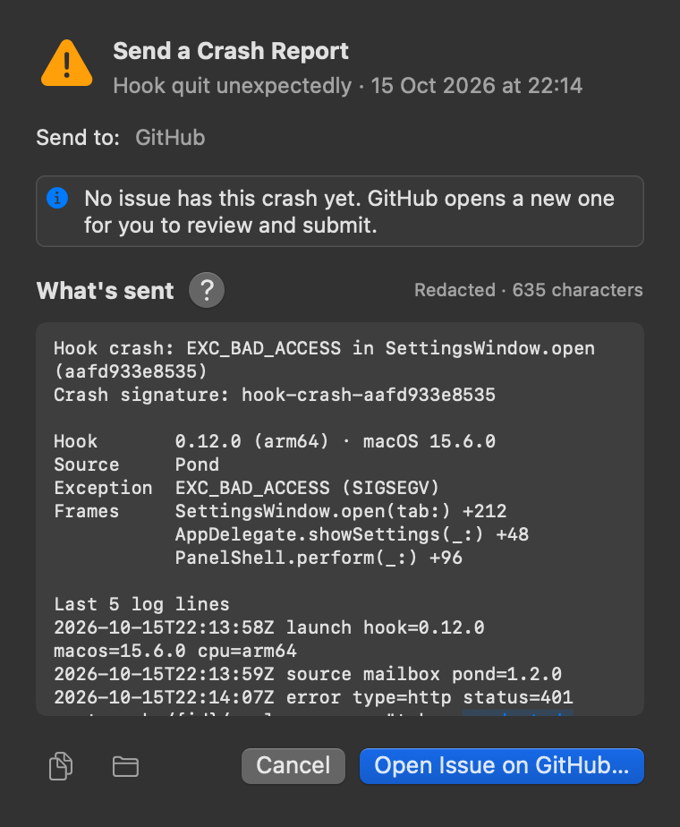
Redacted, exactly as it would be sent. Nothing leaves unless you send it.
Eighteen agents. One install.
Mac test pending built on the agent's CLI, not yet tested on a MacFrom docs built from the agent's docs and Hook's tests
Checked against its checksums. Nothing compiles on your Mac.
curl -fsSL https://raw.githubusercontent.com/xooxoxxo/hook/main/scripts/get.sh | bash
macOS 14 or later, and Python 3.9 or later.
Hook checks GitHub daily and installs updates in the background. Your settings stay.
~/.local/share/hook/current/scripts/install.sh --uninstall
Latest release on GitHub, with SHA256SUMS.
Use the command, not the zip. Releases aren't notarized yet, so macOS blocks a zip from a browser. Then try Settings › Queue › Send a Test Ask.
Hook is at 0.15 and moves fast.
Open a GitHub issue with what you did, what you saw and relay --version. Send security issues privately, through the Security tab.
The next launch shows the redacted report and a prefilled GitHub issue. You decide whether it goes.
No analytics. The activity log stays on your Mac. Hook asks GitHub daily for updates, and sends a 12-character crash hash to find a matching issue.